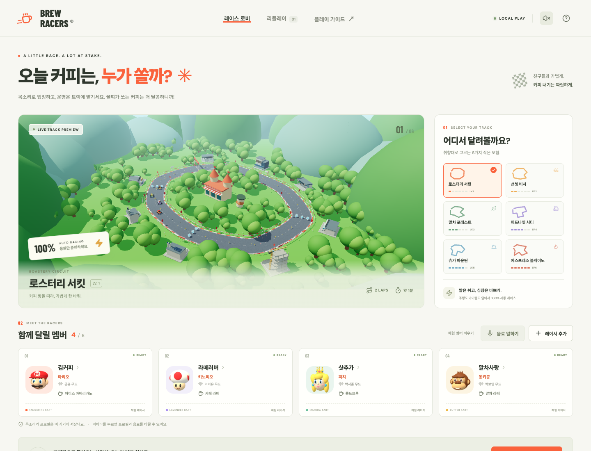

음소거 출력 측정 재검증
실행한 검사 결과 · 2026-09-21T03:21:18.352Z
최종 빌드의 app 시나리오 7개가 통과한 뒤 음소거 검사에서 0.010761458426713943이라는 동일한 측정값이 반복됐습니다. 당시 AudioContext 상태와 시계 진행은 기록하지 않아 정확한 원인을 확정하지 않았습니다. 앱은 음소거 상태였고 모든 소스를 끊는 코드를 확인했습니다.
측정 프로브에 0 값의 ConstantSource를 더해 게임 소스가 끊겨도 측정 그래프를 유지하고, 오디오 문맥이 실행 중인지 확인하도록 보완했습니다. 0 입력은 잔여음을 지우지 않으며 기존 음량 기준 0.0001을 그대로 사용합니다. Web Audio 명세는 정지된 문맥에서 AnalyserNode가 같은 데이터를 반복 반환함을 명시합니다. 이것만으로 당시 문맥이 정지됐다고 단정하지 않습니다.
원본 JSON (통과한 app 7개 포함) · 실패 Trace · 오류 문맥 · 후속 검증
